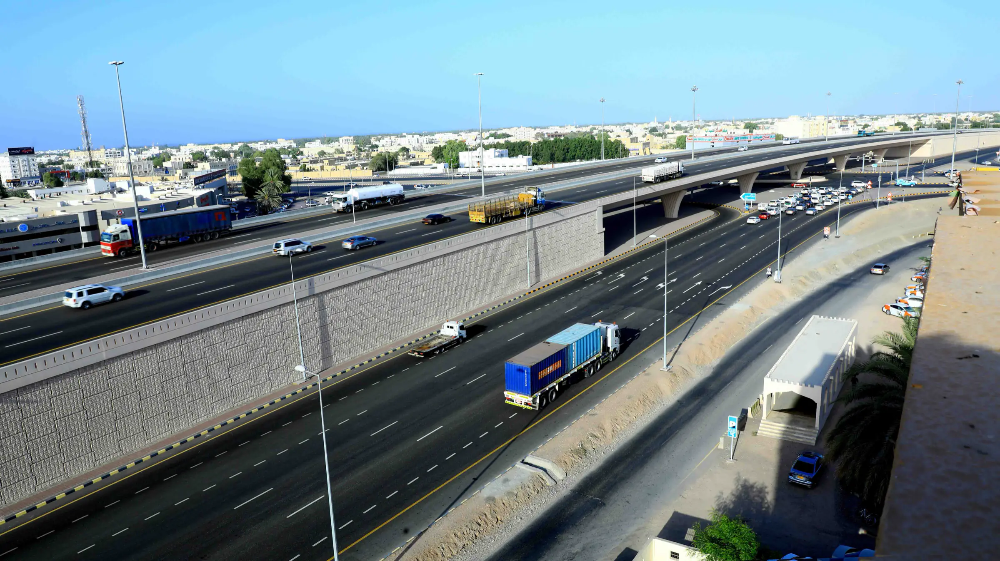
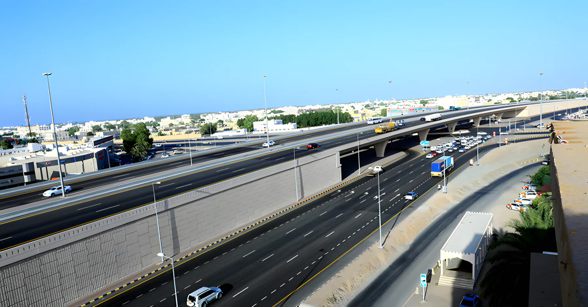
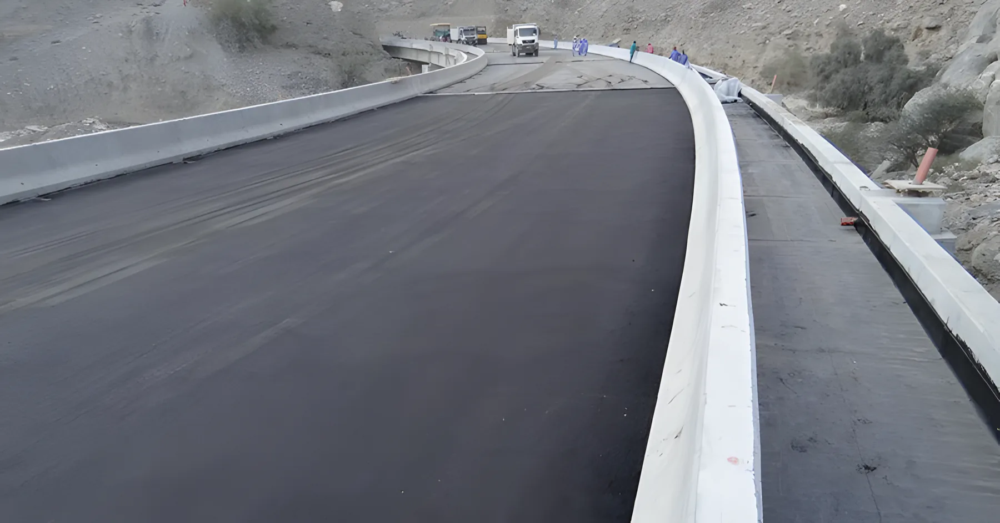
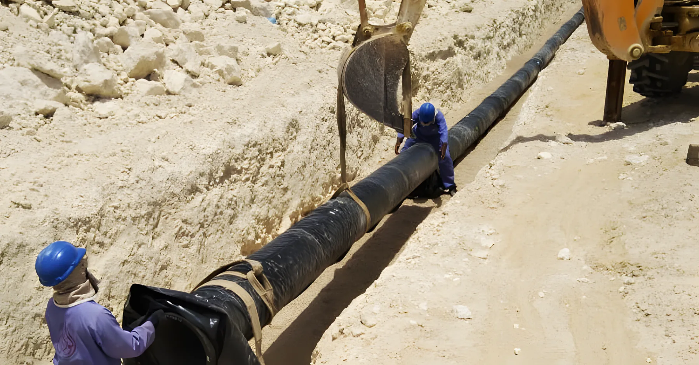
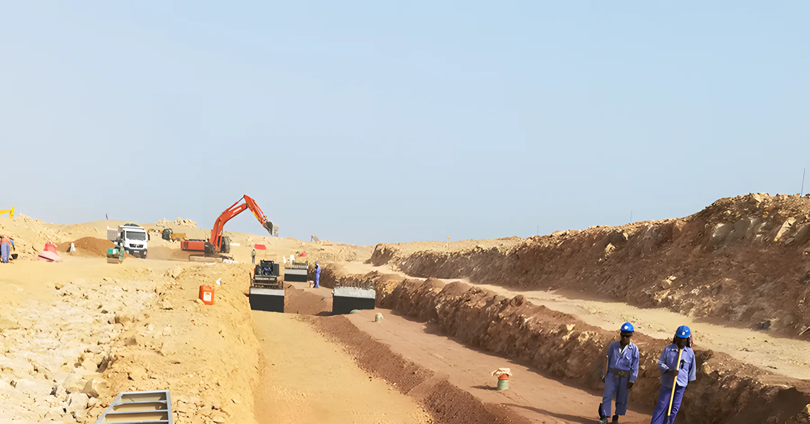

الشركة الوطنية المتحدة للهندسة والمقاولات
طرق وجسور، مبانٍ، شبكات مياه وصرف صحي، ومحطات كهرباء في أنحاء عُمان. مقاول عُماني منذ 1992، وكان اسمنا سابقاً NUEC.
Al Watanyiah United Engineering & Contracting Co. LLC

المشاريع
مختارات من سجل مشاريعنا: الموقع وقيمة العقد. طرق، وحرم جامعي، ومبانٍ وزارية، ومئات الكيلومترات من الأنابيب.
| صورة | رقم | المشروع | الموقع | قيمة العقد |
|---|---|---|---|---|
 | 01 | Upgrading of Sohar Roundabout | صحار | OMR 20,948,376 |
 | 02 | Asphalt Road to Wadi Al Sahtan | الرستاق | OMR 31,990,898 |
 | 03 | Mobella Wastewater Project | المعبيلة، مسقط | OMR 58,531,567 |
 | 04 | A'Sharqiyah University | إبراء | OMR 23,000,000 |
 | 05 | Water Supply System for Hayma | الوسطى | OMR 24,487,145 |
 | 06 | Dualization of Al Rustaq Escarpment Road | الرستاق | OMR 27,706,329 |
 | 07 | Headquarters building, Ministry of Interior | الخوير، مسقط | OMR 3,692,694 |
 | 08 | Sewerage Network and STP, Barka | بركاء | OMR 11,900,000 |
 | 09 | 132/33 kV Yanqul Grid Station & Ibri Regional Building | ينقل وعبري | — |

135,000 م² من الحرم الجامعي، بمقاول واحد.
المبنى الإداري، وكلية التجارة والعلوم الإنسانية، وكلية العلوم التطبيقية، والمكتبة، ومركز الطلاب، ومختبرات الهندسة، ومحطة التبريد المركزية.
ثمانية أقسام، شركة واحدة
أعمال المقاولات العامة وEPC تحت سقف واحد، بأسطولنا وقسم التصميم وورشنا. افتح القسم لترى ما يشمله.
01الطرق والجسورأكثر من 600 كم من الطرق نفّذناها في أنحاء السلطنة.
- الطرق والطرق السريعة ومنشآتها
- التقاطعات والجسور العلوية
- العبّارات والجدران الاستنادية وحواجز الحماية
- ازدواجية الطرق وتوسعتها
- قسم تصميم خاص بأعمال الطرق
02المبانيجامعات ووزارات ومستشفيات ومكاتب ومجمعات فلل.
- المباني الحكومية والوزارات
- الكليات والمدارس والجامعات
- المستشفيات والمراكز الصحية
- المباني التجارية والسكنية والأبراج
- المنشآت الحديدية والمستودعات والمصانع
- المساجد وصالات العرض ومخيمات المشاريع
03شبكات إمداد المياهخطوط أنابيب وخزانات ومحطات ضخ؛ مسجّلون لدى هيئة الكهرباء والمياه حتى قطر 600 مم.
- خطوط إمداد المياه
- الخزانات الأرضية والمرتفعة
- محطات الضخ
- محطات معالجة المياه
- منشآت حجز المياه
04شبكات الصرف الصحي ومحطات المعالجةشبكات صرف بالجاذبية ومحطات ضخ وخطوط دفع ومحطات معالجة.
- شبكات الصرف بالجاذبية والتوصيلات المنزلية
- محطات معالجة مياه الصرف
- محطات الضخ وخطوط الدفع
- خطوط المياه المعالجة
- غرف التصريف وتنفيس الهواء
05نقل الكهرباء وتوزيعهاتصميم وتوريد وتنفيذ محطات 132 / 33 / 11 ك.ف وكابلات وخطوط الضغط العالي.
- محطات 132 و33 و11 ك.ف (EPC)
- كابلات الضغط العالي الأرضية
- خطوط النقل الهوائية
- وحدات RMU ولوحات التوزيع
- إنارة الشوارع
06الأعمال الكهروميكانيكيةكهرباء وسباكة وتكييف وإنارة للمباني والمواقع.
- تمديدات الكهرباء والطاقة للمباني
- السباكة والصرف الداخلي
- التكييف
- الإنارة الصناعية والمنزلية
- تركيب المعدات الكهربائية والميكانيكية

07الألمنيوم والزجاجأبواب ونوافذ ألمنيوم وأعمال زجاج ووحدات مطابخ وكاونترات.
- أبواب ونوافذ الألمنيوم
- أعمال الزجاج
- وحدات المطابخ
- الكاونترات

08النجارة والأعمال الخشبيةورشتنا الخاصة بمساحة 1,000 م² وساحة 1,500 م² في مقر الشركة.
- جميع أنواع النجارة والأعمال الخشبية
- أعمال الديكور الداخلي
- ورشة بمساحة 1,000 م²
- ساحة منفصلة بمساحة 1,500 م²

600كم
من الطرق نفّذناها في أنحاء السلطنة، كثير منها عبر الجبال والأودية.
926
معدّة وآلية ومركبة في أسطولنا، تخدمها ورشة رئيسية في مسقط وورش في مواقع المشاريع.
458كم
من خطوط الصرف بالجاذبية في مشروع واحد: المعبيلة، لصالح Haya Water.
في الموقع
صور من مشاريعنا أثناء التنفيذ. اسحب لترى المزيد.


لمن نبني
الوزارات والجهات الحكومية وشركات المرافق والشركات الخاصة، إضافة إلى مشاريع الفلل والمجمعات السكنية.
- الجودة
- شهادة ISO 9001:2015
- السلامة
- شهادة HSE-MS من OPAL
- جائزة
- جائزة DOSSIER للإنشاءات، أفضل مشروع بنية أساسية 2018، طريق وادي السحتن
- التسجيل
- هيئة الكهرباء والمياه (حتى 600 مم)، OETC، DCRP الفئة أ، RCA
- ديوان البلاط السلطاني
- وزارة الدفاع
- شرطة عُمان السلطانية
- وزارة الداخلية
- وزارة الصحة
- وزارة التربية والتعليم
- وزارة النقل والاتصالات
- اللجنة العليا لتخطيط المدن
- وزارة البلديات الإقليمية
- وزارة الأوقاف والشؤون الدينية
- الهيئة العامة للكهرباء والمياه
- جهاز الأمن الداخلي
- Haya Water
- BP, Sohar Aluminium, Bechtel, OCTAL, GS E&C
تواصل معنا
المكتب الرئيسي والورشة الرئيسية، مسقط
ص.ب 2053، الرمز البريدي 111، مكتب البريد المركزي، سلطنة عُمان
للمناقصات والاستفسارات العامة وتسجيل الموردين والوظائف: اتصل بنا أو راسلنا على البريد.
- هاتف
- +968 2450 2581 / 82 / 83
- فاكس
- +968 2450 2532